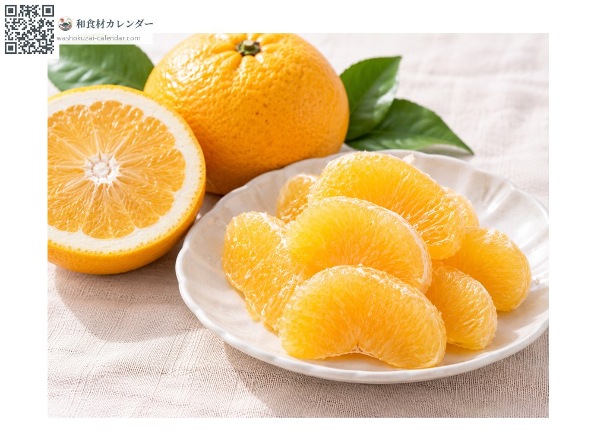
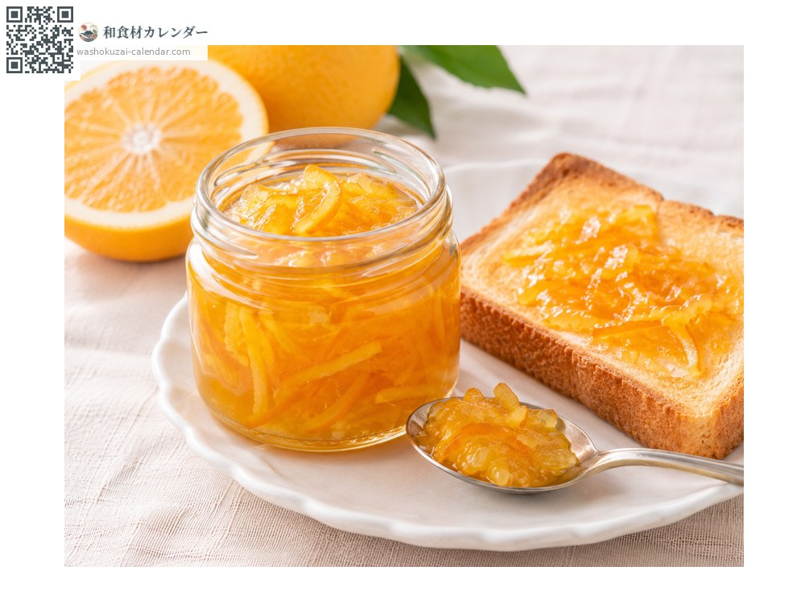
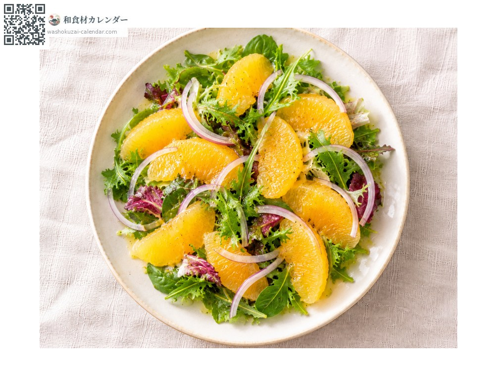
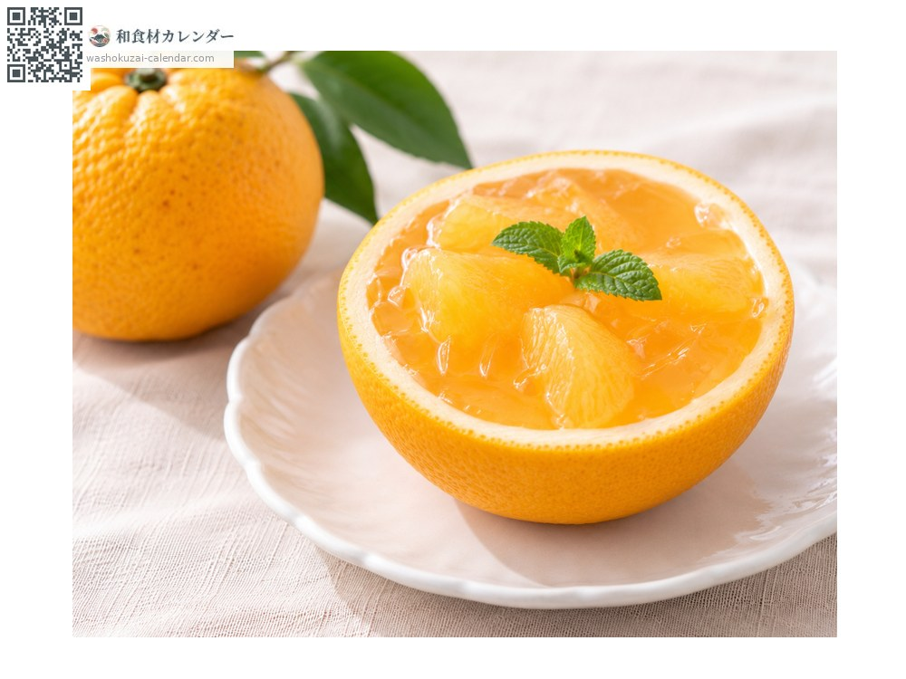

ผลไม้
ส้มอะมะนัตสึ
甘夏 あまなつ amanatsu
ชื่ออื่นamanatsu, mikan
อร่อยที่สุดในเดือน เม.ย., พ.ค.

ช่วงที่อร่อยที่สุด
ม.ค.
ก.พ.
มี.ค.
เม.ย.
พ.ค.
มิ.ย.
ก.ค.
ส.ค.
ก.ย.
ต.ค.
พ.ย.
ธ.ค.
ช่วงอร่อยที่สุดมีจำหน่าย
วิธีปรุง

ทานสด
ปอกเปลือกหนาออก แล้วลอกเยื่อหุ้มกลีบด้วย

แยมผิวส้ม
สับเปลือกแล้วเคี่ยว กลิ่นหอมออกมาดี

สลัด
แกะกลีบคลุกกับผักใบ

เยลลี่
ใช้เปลือกเป็นถ้วย แล้วทำน้ำส้มให้แข็งตัว
วิธีเลือก
เปลือกตึง ยกแล้วรู้สึกหนัก สีเข้มและสม่ำเสมอ
วิธีเก็บรักษา
เก็บในที่เย็น มืด และอากาศถ่ายเท ถ้ากลัวแห้งให้ใส่ถุงแช่ช่องผัก
แหล่งผลิตหลัก
เกร็ดน่ารู้
ชื่อทางการคือคาวาโนะนัตสึไดได พบในปี 1935 ที่เมืองสึคุมิ จังหวัดโออิตะ โดยเป็นกิ่งกลายของส้มนัตสึมิคัง เปรี้ยวน้อยกว่าต้นแม่จึงกินง่ายกว่า ผลที่เพิ่งเก็บจะเปรี้ยวจัด จึงต้องพักไว้ระยะหนึ่งให้กรดลดลงก่อนส่งขาย